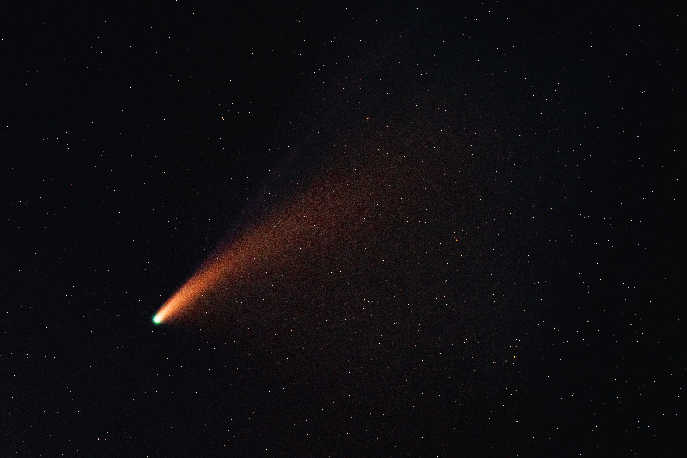
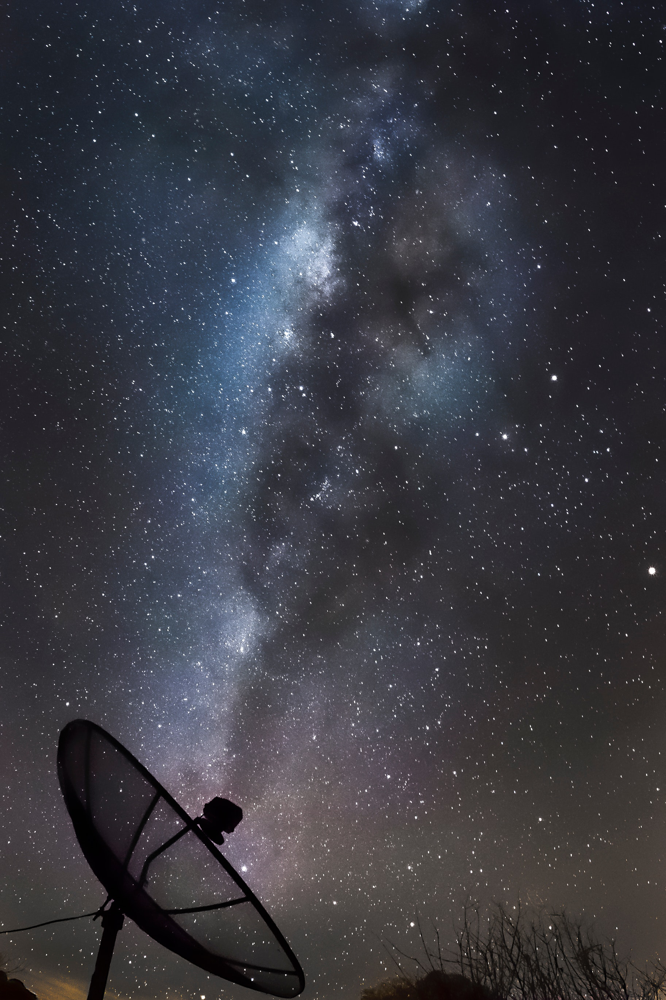

Whitby Astronomical Society
Toggle Video
Join Today!
New Developments in Optical Imaging
Physics Fundamentals
Emerging Astrobiology
James Webb Telescope Launches

Celestial Mechanics
Science Center

Space Laboratories
See the Stars for Yourself
Learn about Space
Engaging Others
Our Beautiful Solar System